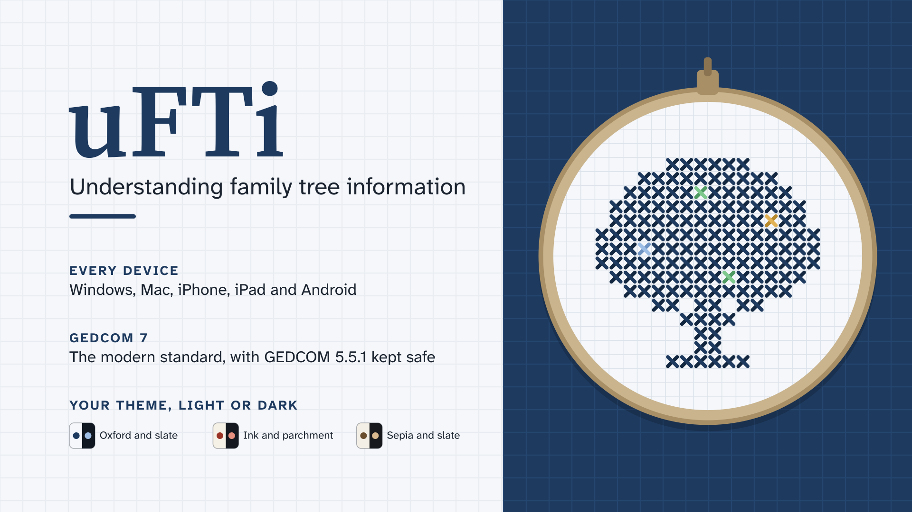
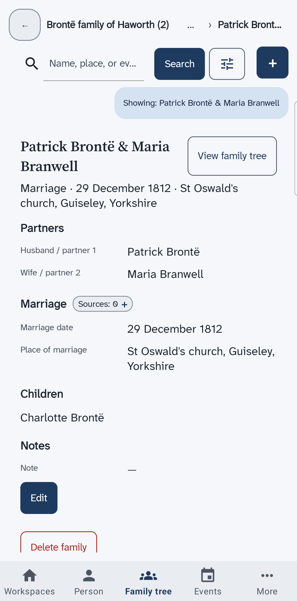

Welcome to uFTi
An app for your family tree that ties every fact to the place you found it.
You add people, families and facts. For each fact, you say where you found it. Later you can see what backs it up.

What uFTi is
There is one uFTi app for each kind of device: Windows, Mac, iPhone, iPad and Android. Each app is built for its own device. It is not a web page.
Here is the same family, the Brontë family of Haworth, on a phone and on a Windows computer.


Where things stand
uFTi is in Alpha. That is an early stage, so the apps and these pages still change. Alpha-1 is not open to the public yet.
The manuals match Alpha-1. The Windows, Android phone, Android tablet, iPhone and iPad manuals are the fullest. The Mac manual is shorter.
Everything on these pages is about the uFTi apps.
Your family tree files
Family history programs share trees as files in a format called GEDCOM. uFTi uses the newest version, GEDCOM 7, as its own. It also reads and writes the older GEDCOM 5.5.1, so you can move a tree to and from an older program.
Who makes uFTi
Oughtibridge Ltd makes uFTi. It is a company in the United Kingdom, set up in 1994. Its particular skill is robust data architecture. That means planning how information is stored so that it stays correct and can be checked.
The company also helps to write international standards. It leads standards projects, and it convenes working groups, in ISO and in IEC. ISO is the International Organization for Standardization. IEC is the International Electrotechnical Commission. Both publish standards. A standard is a set of rules that people agree on, so that things made by different people work together.
We bring the same care to uFTi, where the data are the facts of your family.
Choose your device
uFTi on Windows
The Quick Start and the manual for uFTi on a Windows computer. The latest version is Alpha-1.
uFTi on Android phone
The Quick Start and the manual for uFTi on an Android phone. The latest version is Alpha-1.
uFTi on Android tablet
The Quick Start and the manual for uFTi on an Android tablet. The latest version is Alpha-1.
uFTi on iPhone
The Quick Start and the manual for uFTi on an iPhone. The latest version is Alpha-1.
uFTi on iPad
The Quick Start and the manual for uFTi on an iPad. The latest version is Alpha-1.
uFTi on Mac
The Quick Start and the manual for uFTi on a Mac. The latest version is Alpha-1.